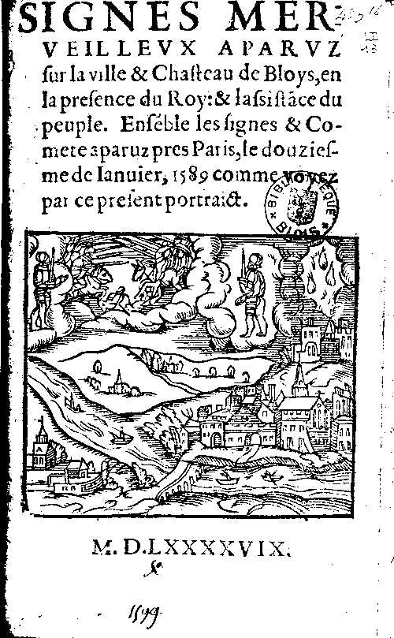

Spécimen préservé à la B. M. de Blois (LI 13), identique à celui préservé à la Bibliothèque d'Etude et du
Patrimoine de Toulouse (Mf. 336)

Entre Paris et Saint Denis, ont voit 2 grosses nuées rendant grande clarté,
et venant l'une contre l'autre, s'assemble, puis se recule, et en sortit grand nombre de sagettes et lances de
feu, qui dura longtemps à se combattre, puis après s'étant bien combatu, se recule de rechef, puis commencèrent
à cheminer, et passèrent par-dessus de Paris, et vont droit vers le Midi "Autres Signes espouventables apparus au Ciel, entre Paris & Sainct Denis en France, le douziesme & treiziesme jour de Janvier, 1589 < Auteur anonyme: Signes merveilleux aparuz sur la ville & Chasteau de Bloys, en la presence du Roy : & l'assistance du peuple. Ensemble les signes & Comete aparuz pres Paris, le douziesme de Janvier, 1589 comme voyez par ce present portraict, 1599 (?), Bibliothèque Municipale de Blois, n° Inv. : LI 13 < Deliyannis, Yannis: "1589 : Saint-Denis and Paris (France)", Magonia Exchange, 9 mai 2007"Véro-UFO Catalogue" (Catalogue d'observations de la région du Gard), VERONICA, 1979.
On voit dans le ciel 1 grand Croissant, et 1 étoile au dessous, de la façon d'une comète,
laquelle éclaire tout le jour, et dont le peuple est fort émerveillé. Peuple Chrétien, prions Dieu qu'il nous
preserve de ce que les Astres nous menacent. Ainsi soit-ilIbid.
À Konstanz merveilleuse figure dans le ciel
Aurore boréale probable Hellman, 1921, p. 19, 88 < Silverman, Sam: "Auroral Annotations".